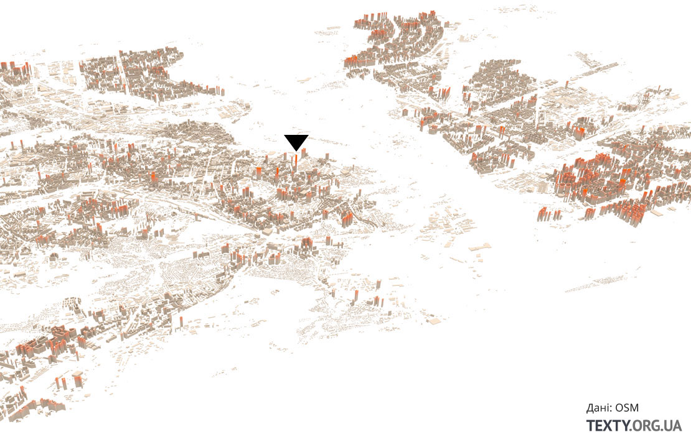
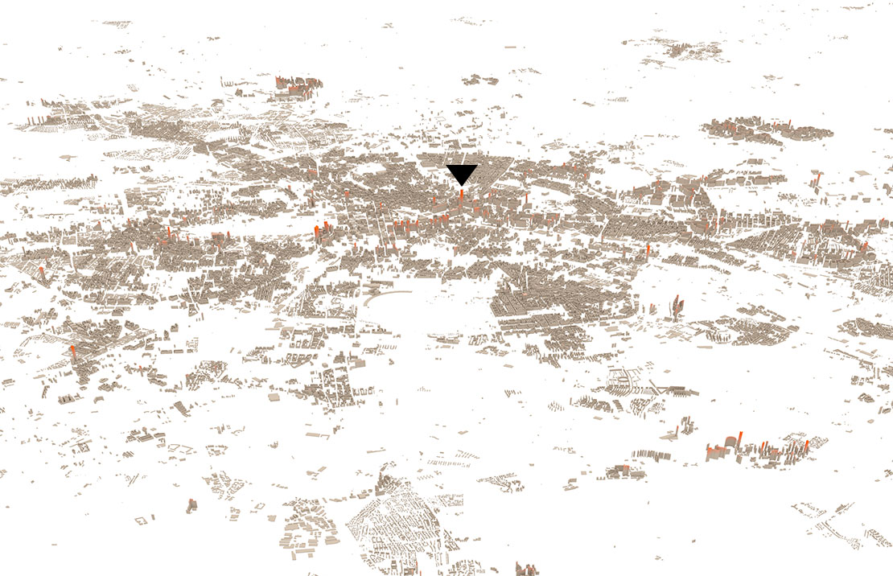
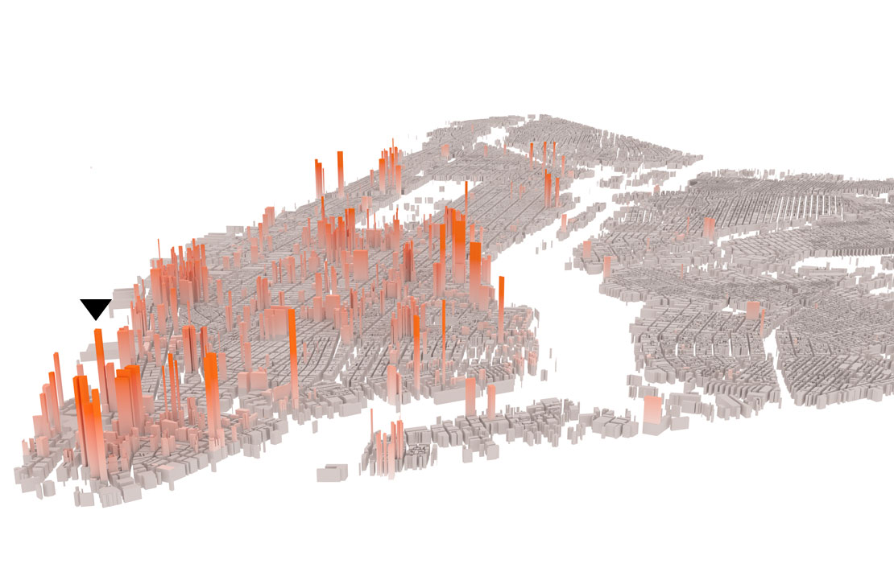
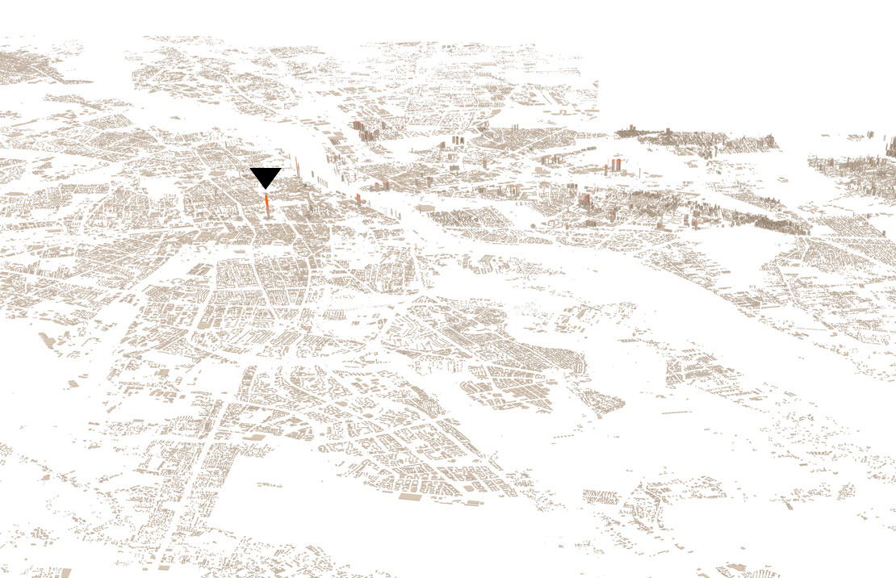
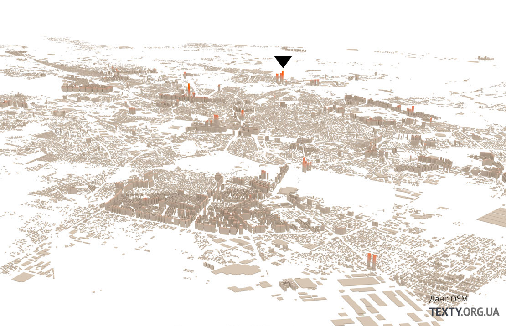
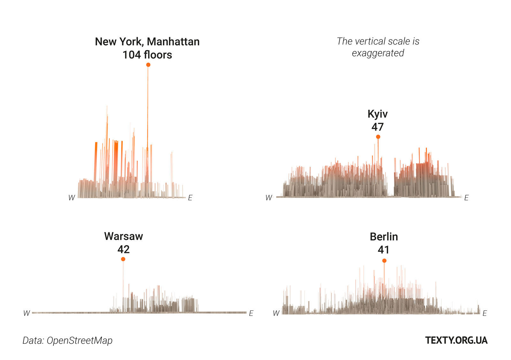

The advantage that a big city can provide is communication. When you leave your apartment early in the morning and live through the day you have a plenty of chances to chat with lots of interesting people. These talks inspire you - for example, for a great idea at the end of the day. And good ideas usually mean money. Also humans are very social creatures and friendly communication with others gives them that vital feeling of happiness. It is what we all need. That’s why modern cities, such as Barcelona, organize its urban space to suit the people need for communication in a best way.
Kyiv reminds of New York at the end of 19th century, when the city had being built without any regulations. Theoretically there are rules, city plans and even “General City Plan”, but practically developers build wherever they have managed to get a piece of land – partially because of corruption, partially because of weak judicial and law enforcement systems. And they build as many floors as they can. After all the cost per meter in the high rise buildings is less than in the lower ones.
Eventually The City of New York established plenty of rules and regulations on what, where and how could be built, because the city exists for people and not for real estate profits. And now New York is a kind of Kyiv vice versa. Once known as the city of skyscrapers in fact New York is high-rise only in the center. The central part of Manhattan was once built up densely and high, the rest of the city consists mainly of two- or three storeyed buildings.
STRUGGLE FOR LIMITED SPACE
As a rule in any metropolis there are three groups which compete constantly with each other and thus influencing the city’s development.
The first one consists of those who have been living here since their great-great ancestors. Usually they have some real estate, sometimes more than one, which some of them rent out. This category has no sympathy to the “newcomers” and is always oppose to the new buildings, because it means less comfort and lower rent prices for them.
The second is the newcomers themselves. Big cities are growing all over the world. It is a global trend, because more active economy attracts thousands of new people. They create the demand for new dwellings and the developers are trying to satisfy it by any means. There are cities in which new houses are not being built. For example the world press often writes about San Francisco. Because of high estate prices some people cannot afford to rent the apartment here anymore. They become homeless and the central streets of San Francisco get dirty with human excrement according to The Economist.
The third party is represented by local activists of left ideology who oppose new constructions and protect local parks perseverance as well as pedestrian areas and other goodies. For them public space is much more important than business development or the demand for housing to be satisfied.
All of these groups are represented in Kyiv. But if in San Francisco there is practically no new buildings at all in Kyiv the situation is quit opposite – there is no such spot, where the construction, usually of a huge high rise, cannot be started. And it is another extreme.
Popular urban theory demonstrates that lower houses are more comfortable for living than the high multistorey buildings. Optimal height for human to feel comfortable is the 7th floor as maximum one to live at. This is a level at which one can recognize the people on the ground, to identify a familiar face. Urban expert Hryhoriy Melnychuk says: “The lower the person lives the more chances for her or him communicating with the neighbors and caring for the mutual space on the ground”.
The houses higher than 10 storeys differ in color. Full city models can be viewed at the end of this text.
Київ. Найвища будівля на Кловському узвозі, 7. 47 поверхів, 168 м, 2012
Берлін. Park Inn by Radisson Berlin Alexanderplatz. 41 поверхи, 149.5 м, 1970
Мангеттен. Freedom Tower. 104 поверхи, 541.32 м , 2013
Варшава. Pałac Kultury i Nauki. 42 поверхи, 231 м, 1955
Бухарест. Floreasca City Center. 37 поверхи, 137 м, 2013
in height or in width
Look at Kyiv city map and you’ll notice that inside its administrative borders the capital has plenty of free land and could have been growing in its width, not in the height. But this type of increase is more costly because then the new roads, housing communications and public transport lines are needed. Sometime it also takes deforestation to be made. With such approach new dwellings will be more expensive than the apartments that are built in high rises now. Taking into account the current costs and the resources saving it is better to grow in height.
But if we do care about nice and comfort city to live in, the one that attracts talents, it would be better to grow in width though it is more expensive. Any start-up owner can earn the same income either in Kyiv or in Berlin – and he’ll be making a choice of comfort. After all a better more expensive dwelling more probably will stay of high value or will even grow in price while the cheap one will be becoming cheaper.
The theory claims that residential areas with high rise buildings can eventually turn into dangerous ghettos, whereas organized urban space with lower buildings creates positive social connections which promote the adequate behavior.
Children, who live with their parents in these multistoried buildings now, will grow up and, as it happens in life, not all of them will succeed. Thus they’ll be staying at home, drinking alcohol and taking drugs, wandering around looking for troubles. The buildings are huge with lots of apartments, social connections between its inhabitants are very weak, nobody knows anyone and there are no restraints for the hooligan.
Grygoriy Melnychuk explains: “In high rise areas, specially the residential ones, public space is occupied by those who do not leave for work every day. Though there are few of them, but still it is enough to organize a street gang. People with a different lifestyle get bothered and feel uncomfortable living in the same space with them”.
The inner planning also matters: even in high rise building entrances with no more than 4-6 apartments on one floor the probability of crime is less because people know each other better. In general poor communication between neighbors increases the probability of different crimes.
But hardly someone reads about urban theories before purchasing their apartment, price per meter is what they are interested in first. And the price is lower in high rise buildings. According to Anton Oliynyk, city architect who designs houses in Kyiv, all developers want the same – to pour the concrete footing and then to build the storeys replicating them one over another.
what about other cities
New York is an antonym city to Kyiv. It extends over a huge area thus preserving its low buildings, explains Anton Oliynyk. The world known city of skyscrapers is very high only in its central part. Manhattan has ideal natural conditions to build skyscrappers – low seismic activity and less probability for earthquakes.
All top companies want to have their headquarters there. But skyscrapers do not extend over the whole city. Distant areas consist mostly of two-three floors in height. In Kyiv the situation is opposite to that: residential areas such as Poznyaky, Darnytsya, Troyeschyna are covered with high rise buildings in which people live.
New York skyscrapers grew intensely at the beginning of the 20th century due to a number of factors: the land was rising in price, the possibilities for building in width shrank and the city began to grow in height. Also the technologies were developed that had made the higher construction, with all the necessary communications such as water pipes, possible.
Over time, American skyscrapers became a true symbol of the country's technological power.
Today in Europe high rise buildings are found mostly in business areas which are named variously in different cities: business center, modern center, The City. Business areas are separated from the historical center – though usually they are close to it, but the center itself is protected from high rise construction.
In Warsaw a lot of skyscrapers are being constructed but most of them are grouped at one place: in the city center, around The Palace of Culture and Science widely known as “the Stalin’s high rise”. Special line of Warsaw subway has been built to this area. The rest of the city preserves traditional low building.

In Berlin there are some areas in which nothing new can be built. Most of the buildings around the Bundestag have maximum 5-7 floors in height. Anton notes that in general the Germans are more open to combine the old architecture with modern pieces. But while doing so they are held to the restrictions that regulate the height and the density of the construction. Regulated construction is also complemented by comfortable infrastructure such as subway and bikeways.
An architect Anton Oliynyk believes that Kyiv also must follow this way: to preserve the historical part and to provide the opportunity for business to develop the city concentrating high rise buildings in particular places.
By clicking here you can watch all city models in 3D. Each city model can be enlarged and rotated.